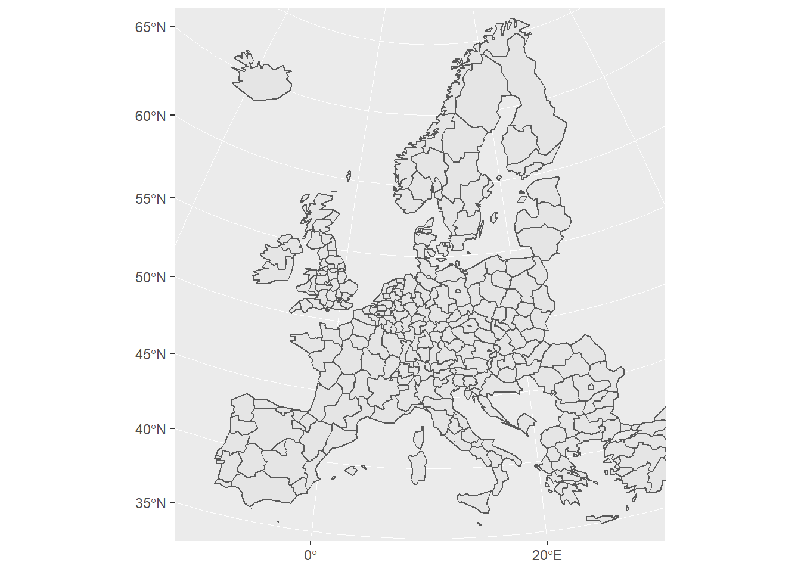
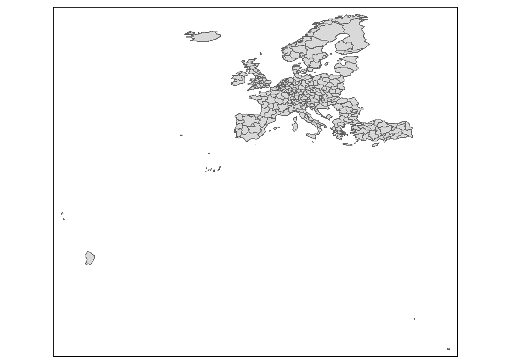
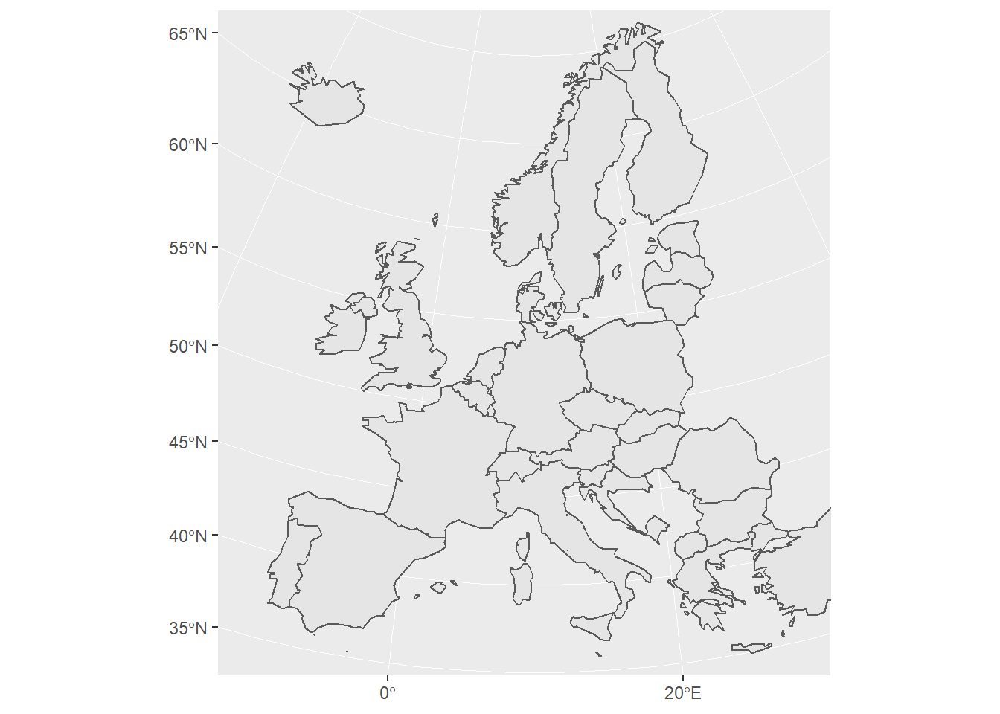

Reading data
- Reading in data of interest (‘information to display’)
- Reading in spatial data (‘the lines on the map’) …
- … from downloaded files.
- … through R-packages.
1 Reading in data of interest
haven readxl readr
2 Reading in spatial data
More about this website.
library(ggplot2)
library(sf)
library(dplyr)
library(ggplot2)2.1 Spatial data in R-packages
2.1.1 Belgium
- Statistical sectors
- Munci
2.2 Europe
library(eurostat)
eu_nuts0 <- get_eurostat_geospatial(
resolution = "60", # detail
nuts_level = "0") # NUTS 0-3
eu_nuts2 <- get_eurostat_geospatial(
resolution = "60", # detail
nuts_level = "2") # NUTS 0-3ggplot(eu_nuts0) +
geom_sf() +
coord_sf(
# limit map to 'mainland' EU
xlim = c(2500000, 6000000), ylim =c(1500000, 5300000),
crs = 3035)
ggplot(eu_nuts2) +
geom_sf() +
coord_sf(xlim = c(2500000, 6000000),
ylim =c(1500000, 5300000), crs = 3035)
2.3 World
library("rworldmap")
world <- getMap(resolution = "low")
world <- st_as_sf(world)ggplot(world) +
geom_sf()
ggplot(world) +
geom_sf() +
coord_sf(xlim = c(2500000, 6000000),
ylim =c(1500000, 5300000), crs = 3035)
m.latam <- world %>%
filter(GEO3 == 'South America')
ggplot(m.latam) +
geom_sf()
m.benelux <- world %>%
filter(NAME %in% c('Belgium', 'Netherlands', 'Luxembourg'))
ggplot(m.benelux) +
geom_sf() +
coord_sf(xlim = c(3700000, 4300000),
ylim =c(2800000, 3500000), crs = 3035)
3 Downloaded spatial data
library(rgdal)## Warning: package 'rgdal' was built under R version 3.4.4## rgdal: version: 1.3-2, (SVN revision 755)
## Geospatial Data Abstraction Library extensions to R successfully loaded
## Loaded GDAL runtime: GDAL 2.2.3, released 2017/11/20
## Path to GDAL shared files: C:/Users/u0062125/Documents/R/win-library/3.4/rgdal/gdal
## GDAL binary built with GEOS: TRUE
## Loaded PROJ.4 runtime: Rel. 4.9.3, 15 August 2016, [PJ_VERSION: 493]
## Path to PROJ.4 shared files: C:/Users/u0062125/Documents/R/win-library/3.4/rgdal/proj
## Linking to sp version: 1.3-1#readOGR()3.1 API
#library(rgdal)
#library(sf)
#readOGR('https://opendata.brussel.be/explore/dataset/bruxelles_distributeurs_bancaires/download/?format=geojson') %>%